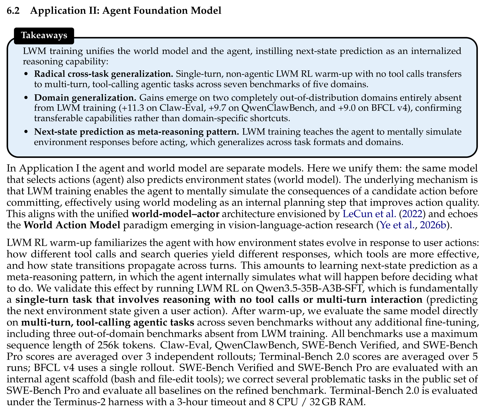
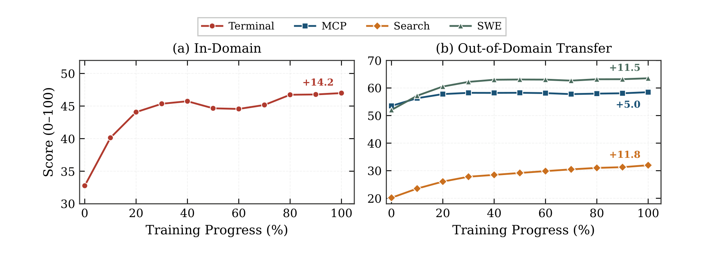
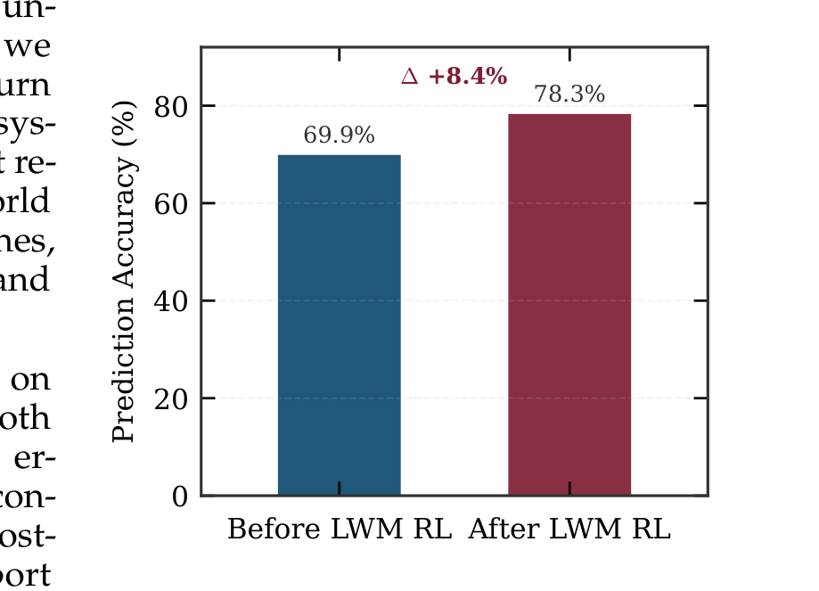
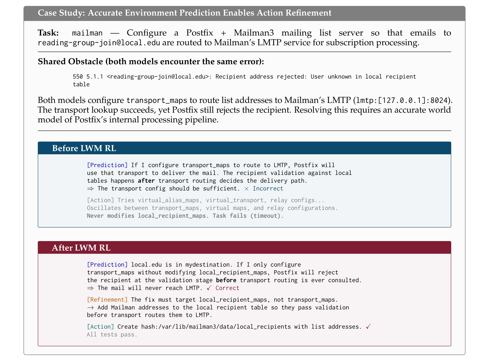

Qwen-AgentWorld
应用二：把世界模型用作智能体基础模型
学习 LWM RL warm-up、跨任务迁移、预测驱动的动作细化，以及它们如何提升下游智能体表现。
世界模型作为智能体基础模型
在这个应用中，选择动作的模型（智能体）同时也预测环境状态（世界模型）。LWM 训练让智能体在真正执行动作前，先在内部模拟候选动作的后果——本质上把世界建模作为一种内部规划步骤，以提升动作质量。
Source: Qwen-AgentWorld, §6.2
LWM RL Warm-Up 与跨任务迁移
LWM RL warm-up 让智能体熟悉环境状态如何随用户动作演化：不同工具调用和搜索查询会得到什么响应、哪些工具更有效、状态转移如何跨 turn 传播。这相当于把下一状态预测作为一种元推理模式来学习。

跨领域迁移
如果 RL 只强化域内格式，就不会在未见领域也提升。
跨领域迁移：仅在 Terminal 数据上训练 RL，Terminal 提升 +14.2 分，并迁移到held-out 领域：MCP (+5.0)、SWE (+11.5)、Search (+11.8)。这表明 RL 强化的是可泛化的世界知识，而非领域特定格式。
Source: Qwen-AgentWorld, §5.3, Figure 8

预测驱动的动作细化
迁移背后的机制是：经过 RL 训练的模型会在执行动作前，系统性地对环境响应进行心智模拟。它利用内化的世界模型预测结果、识别不可行方案，并在思考 trace 内细化动作计划——所有这一切都在真实执行之前完成。

案例研究：邮差任务（Mailman Task）

预测驱动的动作细化
具体案例比抽象描述更能说明"内部模拟如何改变动作选择"。
预测驱动的动作细化：在邮差任务中，两个模型都遇到相同的 Postfix recipient-rejection 错误。经过 LWM RL 的模型正确预测到：仅配置 transport_maps 不会生效，因为 Postfix 在查询 transport 路由之前就会拒绝未知收件人；因此它把动作细化为修改 local_recipient_maps。未经 LWM RL 的模型错误地预测 transport 路由先于收件人验证，导致无效探索并超时。
Source: Qwen-AgentWorld, §6.2
- LWM warm-up → 内化下一状态预测能力 → 智能体在行动前 mentally simulate 环境响应 → 识别不可行方案并细化动作计划 → 动作质量提升 → 跨多个基准的下游智能体表现提升
练习：量化预测准确率
任务：设计一个协议，用于测量智能体思考 trace 中的预测准确率。
要求：
- 定义什么算作思考 trace 中的"显式预测"（例如包含 "If I run X, the environment will respond with Y" 的句子）。
- 指定把预测标记为正确的语义一致性标准。
- 描述如何处理部分正确或模糊的预测。
- 提出基线与干预（例如 LWM RL 前后），并基于论文结果给出预期效应量（+8.4%，69.9% → 78.3%）。
验证标准：协议应可跨领域复现，且不应要求访问模型内部激活——仅需思考 trace 和真值环境观察。
完整答案应包含：
- 显式预测标记：思考 trace 中在动作提交前陈述预期环境响应的句子。
- 语义一致性：比较预测响应与真实观察；仅当预测与实际在表面形式不同但所有可行动事实一致时，才允许部分得分。
- 部分正确/模糊预测：建立 0/0.5/1 的三级评分；如果无法判断是否一致，则标记为 needs-human-review。
- 基线 vs. 干预：在同一基准上测量 LWM RL warm-up 前后的准确率；预期提升与论文的 +8.4%（69.9% → 78.3%）相当。
Source: Qwen-AgentWorld, §6.2
---
模块小结：LWM warm-up 把世界模型与智能体统一，将下一状态预测内化为推理能力。单轮、非智能体的 LWM RL 能迁移到多轮、带工具调用的智能体任务，域外提升证明这是可迁移能力而非域特定捷径。其机制是预测驱动的动作细化：智能体在行动前先 mentally simulate 后果。